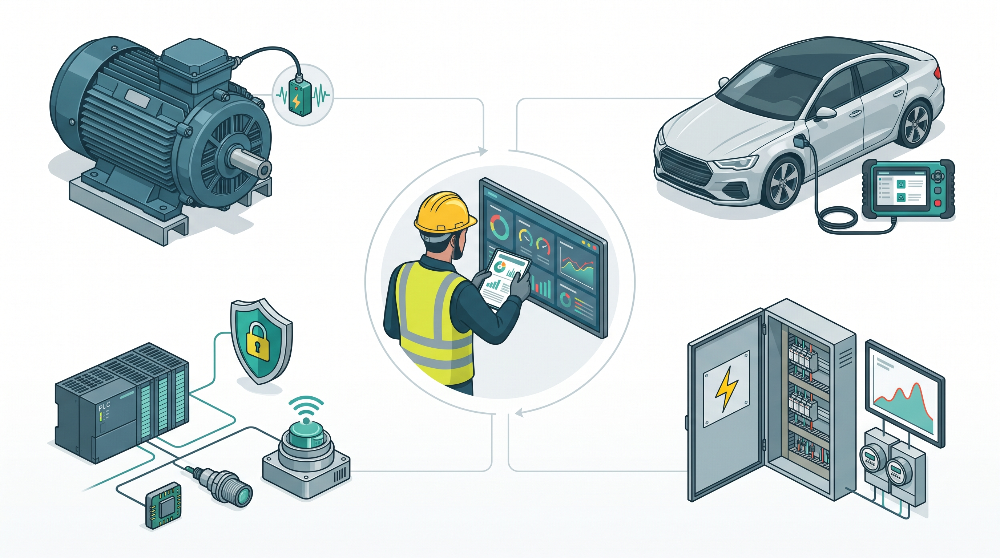
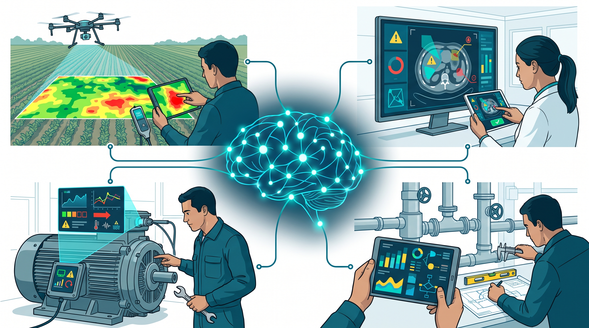
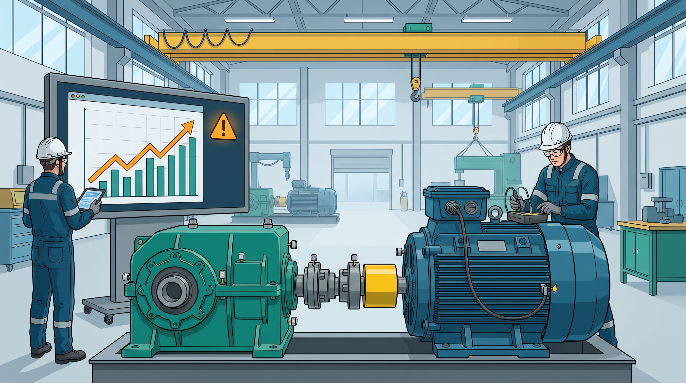
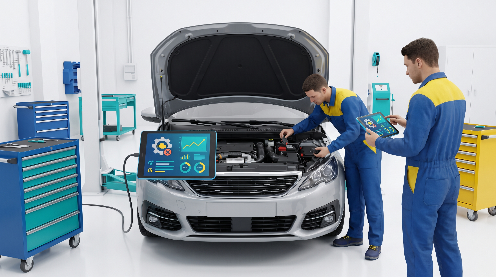
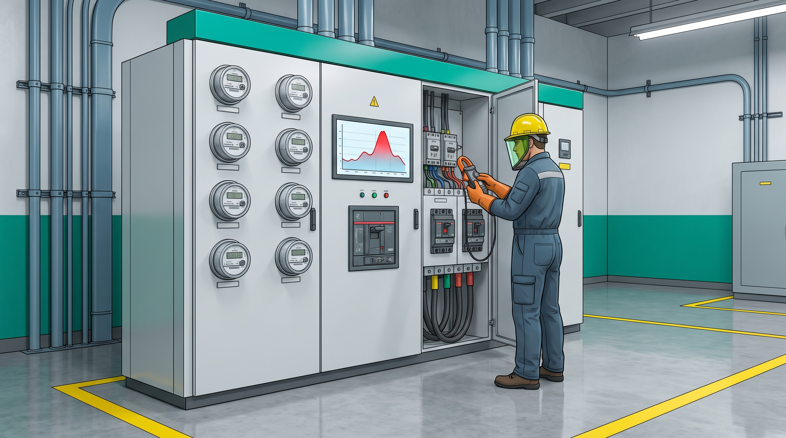
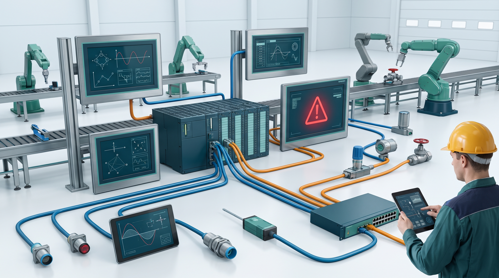

NM4 · Unidad 3 · Comunicación para el mundo laboral
Industria 4.0
Las máquinas producen datos. El trabajo técnico consiste en interpretarlos, comprobarlos y convertirlos en una decisión segura.
Clase 490 minutosEquipos de 3 o 4Producto en el cuaderno

1
Objetivo y ruta de trabajo
Analizar cómo una tecnología conectada transforma una tarea de la especialidad y elaborar una recomendación técnica basada en dos fuentes, datos del caso, riesgos y criterios de seguridad.
No se evalúa quién encuentra más información. Se evalúa quién usa mejor la evidencia para justificar una decisión viable y segura.
2
Video · Cuando una máquina empieza a hablar
3
Industria 4.0: un sistema de trabajo conectado
CapturarSensores, escáneres y medidores registran variables del equipo.
Conectar y analizarLos datos se comparan, se visualizan y pueden generar alertas.
Interpretar y verificarEl técnico contrasta el dato con el equipo, el manual y el procedimiento.
Decidir y comprobarSe actúa con seguridad y luego se verifica si la intervención funcionó.
Transformación de la tarea: ya no basta con ejecutar. También hay que leer información, distinguir una alerta de una falla confirmada y explicar por qué se actuará.
IA
¿La inteligencia artificial dejará a muchas personas sin trabajo?

Pregunta para discutir: si una IA recomienda una acción insegura, ¿qué conocimientos necesita la persona para detectarlo y hacerse responsable de la decisión?
Referencia: OIT, Changing landscape of skills in the age of AI, 2026. El informe identifica mayor demanda de competencias cognitivas, socioemocionales, digitales, alfabetización en IA, adaptabilidad y agencia humana.
4
Modelado · El sensor alerta, ¿se detiene la línea?

| Registro | Situación observada |
|---|---|
| Vibración | Sube de 2,4 a 5,1 mm/s durante 18 minutos. |
| Temperatura | Sube de 58 °C a 76 °C en el mismo periodo. |
| Inspección | No hay humo; se percibe un ruido intermitente en el acople. |
| Operación | Faltan 45 minutos para terminar una orden urgente. |
| Ventana | Es posible detener 20 minutos para inspeccionar sin exponer al personal. |
Decisión: ¿continuar, detener para inspeccionar o reemplazar inmediatamente el motor? Antes de responder, separa dato, inferencia y riesgo.
5
Del dato a la recomendación
Vibración y temperatura aumentan al mismo tiempo. También aparece un ruido intermitente.
Puede existir desalineación, lubricación insuficiente o daño en un componente. Todavía no sabemos cuál.
Continuar puede agravar la falla. Reemplazar sin diagnóstico puede ser innecesario. Una inspección controlada reduce incertidumbre.
Detener según procedimiento, aislar energías, revisar acople y rodamiento, registrar hallazgos y probar antes de reiniciar.
Recomendamos una detención controlada de 20 minutos porque coinciden tres indicios y existe una ventana segura de inspección. No afirmamos que el rodamiento esté dañado: primero se debe comprobar la causa y registrar el resultado.
La clave del modelo: una recomendación sólida no exagera lo que sabe, compara riesgos y propone cómo verificar.
6
Trabaja el caso de tu especialidad
4°A · Mecánica Industrial
Mantenimiento predictivo: decidir ante una alerta de vibración y temperatura.

4°B · Mecánica Automotriz
Diagnóstico digital: contrastar el código del escáner con la inspección técnica.

4°C · Electricidad
Gestión de demanda: redistribuir cargas sin comprometer seguridad ni continuidad.

4°E · Electrónica
Automatización conectada: responder a una anomalía sin exponer la red industrial.
4°D continúa en el proyecto Anuario. Esta clase corresponde solo a 4°A, 4°B, 4°C y 4°E.
4°A
Mecánica Industrial · ¿Parar o seguir produciendo?
Rodamiento bajo observación
Un motor mueve una cinta de producción. El sistema detecta un cambio sostenido, pero la orden del turno todavía no termina.
2,3 → 5,4 mm/svibración en 25 minutos
62 → 79 °Ctemperatura del apoyo
30 minventana disponible
Sin humoruido leve e intermitente
- Continuar y observar 15 minutos.
- Detener, aislar energías e inspeccionar acople, lubricación y rodamiento.
- Reemplazar de inmediato el motor completo.
Siemens · mantenimiento predictivoBusca qué permite detectar el análisis de vibraciones y qué límites tiene.Abrir fuente oficial
ChileValora · automatización y robóticaUbica acciones de preparación, mantenimiento, seguridad y prueba de funcionamiento.Abrir fuente oficial
Investiga: ¿qué confirma el sensor?, ¿qué debe revisar el técnico?, ¿qué opción reduce mejor el riesgo sin afirmar una falla no comprobada?
4°B
Mecánica Automotriz · El escáner no es el diagnóstico completo
Alerta intermitente en un vehículo híbrido
El vehículo llega con una alerta que aparece y desaparece. El cliente pide borrar el código porque necesita retirarlo pronto.
1 códigocomunicación intermitente
11,7 Vbatería auxiliar en reposo
Corrosión leveen un conector visible
Sin pruebatodavía no se comprueba la causa
- Borrar el código y entregar.
- Cambiar el módulo indicado por el escáner.
- Seguir pauta: revisar alimentación, conector, datos en vivo y repetir la prueba.
Bosch · diagnóstico ESI[tronic]Identifica qué información aporta el software y cómo guía una reparación.Abrir fuente oficial
ChileValora · diagnóstico de vehículo eléctricoBusca el papel del manual, los instrumentos, el procedimiento y la seguridad.Abrir fuente oficial
Investiga: ¿qué dato orienta?, ¿qué evidencia falta?, ¿por qué reemplazar el módulo todavía sería una conclusión apresurada?
4°C
Electricidad · Ahorrar energía sin crear otro riesgo
Pico de demanda en el taller
El sistema de gestión detecta que la potencia supera lo contratado y propone desconectar automáticamente dos circuitos.
48 kWdemanda actual
45 kWpotencia contratada
6 kWventilación de soldadura
4 kWiluminación de bodega vacía
- Desconectar ambos circuitos.
- Mantener todo y aceptar la sobrecarga.
- Proteger ventilación crítica, verificar cargas y desconectar solo consumo no esencial.
Schneider Electric · sistemas eléctricos conectadosBusca qué datos entregan los equipos y cómo apoyan continuidad y mantenimiento.Abrir fuente oficial
ChileValora · mantenimiento eléctricoIdentifica equipos, protecciones y criterios de procedimiento y normativa.Abrir fuente oficial
Investiga y calcula: ¿cuánto debe reducirse como mínimo?, ¿qué carga no se debe sacrificar?, ¿qué verificación debe hacerse antes de automatizar?
4°E
Electrónica · Conectar mejora el control, pero aumenta la exposición
Anomalía en la red de control
Una línea con PLC, HMI y sensores sigue produciendo, pero el monitor detecta conexiones repetidas desde un equipo de mantenimiento remoto.
12 alertasen cinco minutos
Producción normalsin defecto visible todavía
Acceso remotoactivo fuera de horario
Sin registronadie reconoce la conexión
- Ignorar mientras la línea produzca.
- Apagar toda la planta sin revisión.
- Aislar el acceso remoto, conservar evidencia, verificar PLC/HMI y activar el protocolo.
CISA · exposición de sistemas industrialesUbica riesgos de acceso remoto, contraseñas, actualizaciones y monitoreo.Abrir fuente oficial
ChileValora · sensores, actuadores y transmisoresBusca cómo se prepara, aísla, mantiene y comprueba un sistema de instrumentación.Abrir fuente oficial
Investiga: ¿por qué “la línea funciona” no descarta el riesgo?, ¿qué se aísla primero?, ¿qué información debe conservarse para investigar?
7
Investigación guiada · 26 minutos
Equipo de 3 o 4
En un equipo de tres, el secretario también cumple la función de desafiador.
Lee el caso y subraya los datosNo agregues información que el caso no entrega.
Abre las dos fuentes indicadasBusca solo una idea pertinente en cada una. No copies párrafos.
Registra la procedenciaOrganización · título · fecha o año · idea que usarás.
Compara las tres opcionesBeneficio, riesgo, evidencia a favor y dato todavía faltante.
Elige y limita tu conclusiónIndica qué recomiendas, por qué y cómo comprobarás que funcionó.
Pregunta de control: si quitaras las fuentes, ¿tu decisión seguiría igual? Si la respuesta es sí, todavía no estás usando la investigación.
8
Producto · Ficha de decisión técnica 2030
Decisión técnica 2030Caso y especialidadDatos comprobablesEvidencia de fuente 1Evidencia de fuente 2Beneficio y riesgoCompetencia requeridaRecomendación final
9
Contrasta, corrige y cierra
Otro equipo revisa
- La recomendación usa datos concretos del caso.
- Las dos fuentes están identificadas y realmente aportan a la decisión.
- Se distingue lo comprobado de lo que todavía debe verificarse.
- La opción descartada se rechaza por una razón técnica, no por gusto.
- Se explica un beneficio, un riesgo y cómo controlarlo.
- La competencia humana es específica y coherente con la especialidad.
- La acción propuesta respeta seguridad y permite comprobar el resultado.
Fuentes de la clase: OIT · competencias para la transformación digital · Siemens · mantenimiento predictivo · Bosch · diagnóstico · Schneider Electric · sistemas conectados · CISA · exposición industrial · ChileValora · automatización y robótica.